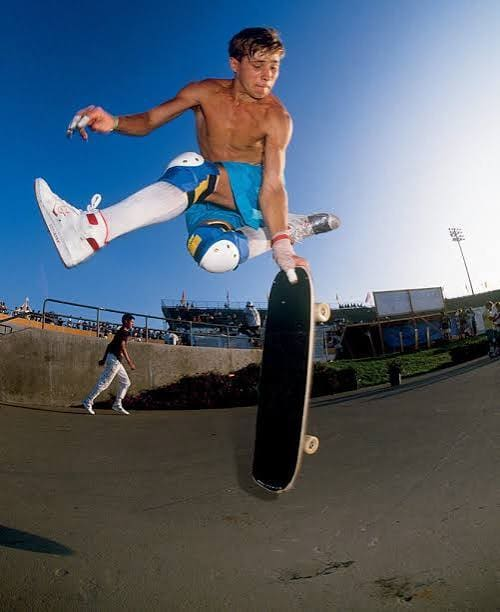
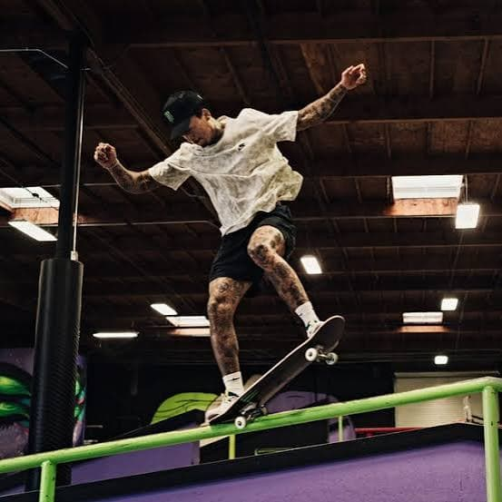

Rodney Mullen
The godfather of flat-ground tricks

Widely credited with inventing the flatground ollie, the kickflip, and dozens of other flip tricks that are now considered the basic vocabulary of street skating.
Est. 1950 · Concrete & Culture
Not a sport, but a lifestyle.
02 — Icons
A handful of names come up in nearly every conversation about how skateboarding got here.
The godfather of flat-ground tricks

Widely credited with inventing the flatground ollie, the kickflip, and dozens of other flip tricks that are now considered the basic vocabulary of street skating.
Vert skating's most recognizable face
Landed the first documented 900 in competition and helped carry skateboarding into mainstream pop culture through contests, media, and a namesake video game series.
Modern street skating's dominant competitor

One of the most decorated street skaters of his generation, known for technical precision on rails and stairs at a level few have matched.
Olympic-era park skating
Became one of the youngest Olympic medalists in skateboarding history, representing the sport's newest generation on its biggest stage.